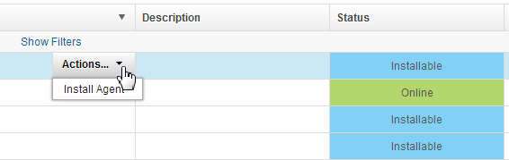

Installing agents remotely
You can install agents by using the HCL® UrbanCode™ Deploy web application.
- You must have permission to see the Settings tab to install agents with this method.
-
For production environments, create a user account that is dedicated to running the agent on the computer where the agent is installed.
Note: This user account must have access to all working directories that are used in the processes that this agent runs. If this user does not have access to the working directory specified in a process step, that step fails.
If you are installing the agent on z/OS®, review Security requirements on the IBM z/OS computers.
-
Ensure that each computer where you are installing an agent has a supported version of the Java™ Runtime Environment (JRE) or Java developer kit. For more information, see System Requirements for IBM UrbanCode Deploy.
-
If the target computer has an IBM JRE or Java developer kit, update to a supported version of the IBM JRE or Java developer kit.
-
Make sure that your networks and firewalls allow communication on the required ports. See Firewall and communication configuration.
- Ensure that there is no limit on the maximum memory size and virtual memory size. For example, on most Linux™ systems, you can run the
ulimit -mandulimit -vcommands and ensure that both return the valueunlimited. To find out how to remove the limit on the maximum memory size and virtual memory size, see the documentation for the operating system.
Note: To install agents remotely on Windows™, see Installing agents on Windows through WinRS.
Note: Another option to install agents remotely is to add the Install Agent with SSH step (HCL UrbanCode Deploy Resources plug-in) or the WinRS Agent Install step (WinRS Agent Install plug-in) to a process.
You can install an agent by specifying its target location or install an agent that was previously discovered with the agent discovery feature. You can install several agents simultaneously, and, by using agent installation property sheets, ensure that all agents share basic parameters.
You can install agents only on computers that are running Linux, UNIX™, Windows, or Mac OS. For other systems, including z/OS and IBM i, see Installing agents from the command line.
- From the server, click Resources > Agents.
-
Complete one of the following steps to install an agent:
- If you know the target host, click Install New Agent.
- To install an agent that was discovered with the agent discovery feature, click the Install Agent action for the agent. Discovered agents have the Installable status. For information about the agent discovery feature, see Discovering agents automatically.

-
In the Install New Agent window, select SSH.
Note: If you are installing a discovered agent, this step is skipped because the system type is automatically determined during discovery.
-
Enter the host name or IP address of the system where you want to install the agent in the Target Hosts field. To specify multiple entries, type each one on a separate line.
Note: If you are installing a discovered agent, this step is skipped because the host or IP address is automatically determined during discovery.
-
Specify the following parameters:
- Enter the SSH port address of the target system in the SSH Port field.
- Select the Use Public Key Authentication check box to use public key authentication instead of a password.
-
Enter a name for the agent in the Agent Name field.
Note: If you enter multiple hosts in the Target Hosts field, the agent name is appended with a number. The number is incremented for each host after the first one.
For example, if you enter my_agent as the agent name and specify three hosts, the name of the agent for the first host is my_agent, the name of the agent for the second host is my_agent1, and the name of the third agent is my_agent2. Host names are processed from beginning of the list to the end.
-
Enter the name of the target host user with appropriate permissions in the Username field. This user must have permission to edit the agent directory on the target host.
Note: This user account must have access to all working directories that are used in the processes that this agent runs. If this user does not have access to the working directory specified in a process step, that step fails.
If you are installing the agent on z/OS, review Security requirements on the IBM z/OS computers.
-
Enter the password that is associated with the user in the Password field.
-
Select an agent installation property sheet from the Agent Installation Properties list, or use New to create a property sheet. Agent installation property sheets are templates that can be saved and used to install agents. You can create any number of agent installation property sheets. The agent installation properties are listed in the following table:
Field Description Name Name of the agent installation property sheet. This value is required. Description Property sheet description. Agent Dir Directory on the target where the agent is installed. This value is required. Java Home Path Path to Java on the target. Typically, you enter the value of the JAVA_HOME system variable of the agent system. Do not use the JAVA_HOME variable itself, or any other variable, in this field; you must specify the complete literal path. For example, on a Microsoft™ Windows system, the Java home path might be C:\Program Files\Java\jre. On a Linux system, the Java home path might be /usr/lib/jvm/default-java. This value is required. Temp Dir Path Path to the directory that is used during installation for temporary files. This value is required. Server Host Host name or IP address of the HCL UrbanCode Deploy server or agent relay to which the agent connects. This value is required. Server Port The port that is used by the HCL UrbanCode Deploy server or agent relay to connect to the agent. The default port for connecting to the server is 7918. The default port for connecting to an agent relay is 7916. This value is required. Proxy Host Host name or IP address of the agent relay, if used. Proxy Port HTTP proxy port of the agent relay, if used. The default value is 20080.Auto Start If you want to install the agent as a service, select Auto Start to run the agent automatically when Windows starts. Windows only. Service Name If the agent is installed as a service, enter a name for the agent service. Windows only. Service User If the agent is installed as a service, enter a user name that has appropriate permission to run a service. Windows only. Service Password If the agent is installed as a service, enter the password that is associated with the service user. Windows only. -
Check Assign Team to assign the agent to a team.

- Click Add
 .
. - Select the team to which you want to assign the agent from the Team list.
- Select the agent role from the Role list. For information about teams, see Assigning teams directly to items
- When you are done, click Save.
- Click Add
Remotely installed agents start running automatically. If a remotely installed agent stops running, it must be restarted on the system that hosts the agent.
If you use mutual authentication, you must manually exchange a key between the agent and the server. For more information about this option, see Configuring mutual authentication.
If you are using a high-availability environment, configure the agent for failover to the other servers in the cluster. See Configuring agents for failover.
Parent topic: Installing agents